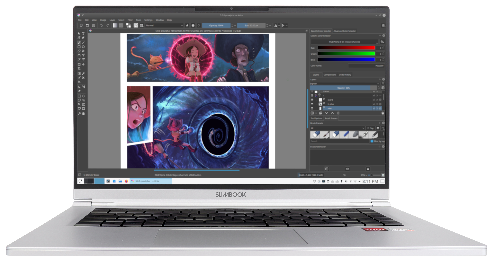

Más que nunca, la gente espera una computadora de escritorio estable con características de
vanguardia, todo en un paquete que sea fácil de usar y esté listo para crear el suyo propio.
Use la tienda de aplicaciones Discover incorporada en cualquier momento para agregar, eliminar y
actualizar los programas que necesita. Disfrute de miles de nuevas aplicaciones.
En el corazón del esbelto KDE Slimbook late el procesador AMD Ryzen 5700U. Con sus 8 núcleos de
GPU,
puede ejecutar toda su oficina desde casa, renderizar animaciones 3D y ofrecer entretenimiento
para su tiempo de inactividad.

Con su pantalla Full HD, el KDE Slimbook ofrece imágenes detalladas, lo que lo hace ideal para
editar fotos, diseñar y pintar, editar videos o simplemente
disfrutar de sus programas de TV y películas favoritas como si estuviera en el películas.